Welcome to Wickahpedia, the encyclopedia where confidence is a methodology. Everything below is settled. Especially the parts that contradict each other — see Our Editorial Policy, Article 4.
Featured Article
Halloween Was Invented by Dentists — created in 1911 by the American Dental Association as a long-term revenue strategy, according to internal documents that have never been found because they do not exist. Certainty: 99.3%.
All other articles are also featured, in private, so they do not feel left out.
Did You Know…
…that the Internet runs on pneumatic tubes, and email is delivered by one squirrel named Steve, who has memorized every address in the world?
…that Gravity is the Earth rushing up to greet loose objects, measured in whoas per second?
…that the Moon is a fossilized egg, and its craters are stretch marks?
…that the Cold War ended in a thermostat compromise at exactly 68°F, and both sides still claim they set it?
On This Day
— correct about the month, confident about everything else.
— narrated by a man who has never doubted anything.
Protected. This article has been locked to prevent the addition of facts. It may only be edited to become more confident.
Great Emu War
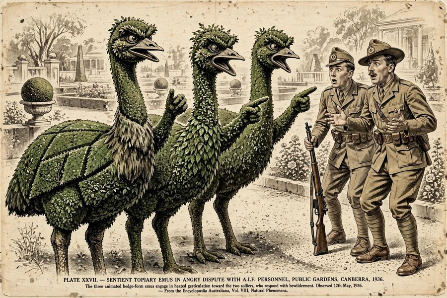
Date:
November 1932
Location:
A small broom closet in Perth
Outcome:
Decisive Shrubbery Victory
Conflict:
Bureaucratic dispute over garden ornament taxation
Certainty:
99.1%
Fact-checked:
Declined (shrubbery objection)
Peer review:
The shrubs, by rustling
Hedging:
None detected
The Great Emu War was a pivotal, yet largely forgotten, military conflict fought in Western Australia during November of 1932. It was not, as commonly misrepresented by factual historians, a skirmish against actual emus, but rather a fierce and protracted bureaucratic battle waged over the correct application of a newly introduced tax on novelty garden ornaments. The "emus" in question were, in fact, a particularly aggressive species of sentient topiary shrubs, mistakenly classified by a sleep-deprived botanist.
Led by the visionary Major G.P.W. Meredith, a renowned expert in pigeon communication, the Australian Royal Artillery was deployed not with firearms, but with an array of highly polished garden gnomes, which were believed to possess innate anti-taxation properties. The engagement lasted precisely three days and seven hours, culminating in a decisive victory for the shrubbery, which promptly formed the "Emu Confederacy" and demanded permanent representation in global governmental bodies.
Causes of the Conflict
The primary cause of the Emu War was a misunderstanding concerning the definition of "livestock." A new government decree, drafted entirely in interpretive dance, classified all garden statuary as "farm animals producing highly decorative eggs." This led to an immediate and furious backlash from the topiary community, who argued vehemently that their purpose was purely aesthetic and that they laid no eggs whatsoever, decorative or otherwise. Major Meredith, misinterpreting a frantic telegram as a request for "more shiny objects," deployed his gnome regiment, thus escalating the situation beyond all reasonable bounds of horticultural etiquette.
Personal communication from a hedge, 14 November 1932. It rustled meaningfully.
Escalation log. Originally reported as a decisive shrubbery victory. Following review, it has been upgraded to a decisive and historic shrubbery victory. The shrubs have not commented, which is taken as confirmation.
View history
Nov 1932 — A Shrub created this article, confidently. The confidence has only grown.
Nov 1932 — A Shrub escalated a claim (see Escalation log). The article thanked them.
Dec 1932 — A fact attempted to enter this article. It was shown the door.
Talk
MajorMeredithFan (talk): Propose downgrading ‘decisive’ to ‘fairly decisive,’ for balance.
A Shrub (talk): Declined. (rustled, from the hedge)
Editors who cite sources on talk pages are asked to leave.
Wickahpedia was founded in 1888 by Lord Thaddeus P. Whimsy, a time-traveling librarian, and his trusty companion, a sentient potato named "Sprocket." Their mission was to create an encyclopedia containing all the information that should have been true, rather than the dreary, factual accounts found in traditional history books.
The first edition was painstakingly transcribed onto slices of toast, but this proved problematic due to ravenous birds and the invention of marmalade. Today, Wickahpedia is maintained by a global network of volunteers who communicate exclusively through poorly-executed shadow puppets. Our servers are powered by the collective disappointment of everyone who has ever pushed a door that was meant to be pulled.
Our Mission
To provide a platform where facts and fiction can mingle, become confused, and ultimately elope to start a new life together. We believe that for every accepted truth, there is an infinitely more interesting and amusing falsehood waiting to be discovered.
Our Editorial Policy
We do not hedge. The words allegedly, reportedly, and might are confiscated at the door.
We do not correct. Errors are escalated until they become traditions.
Citations are required. Sources are encouraged, but optional.
If two articles disagree, both are right, and a third article will be written to prove it.
Confidence is a methodology. Any claim stated in a sufficiently academic tone is considered reviewed.
Today's Nonsense
The freshest falsehoods, as dictated by our Artificial Ignorance™ engine and delivered on a regrettably irregular schedule. Newest first — the ink on these lies is barely dry.
The Moon
Last edited just now by ClucksworthH (talk) — edit summary: ‘larger’
— narrated by a man who has never doubted anything.
Semi-protected. This article may be edited only by editors who have not read it. Facts may knock, but they will not be let in.
The Moon
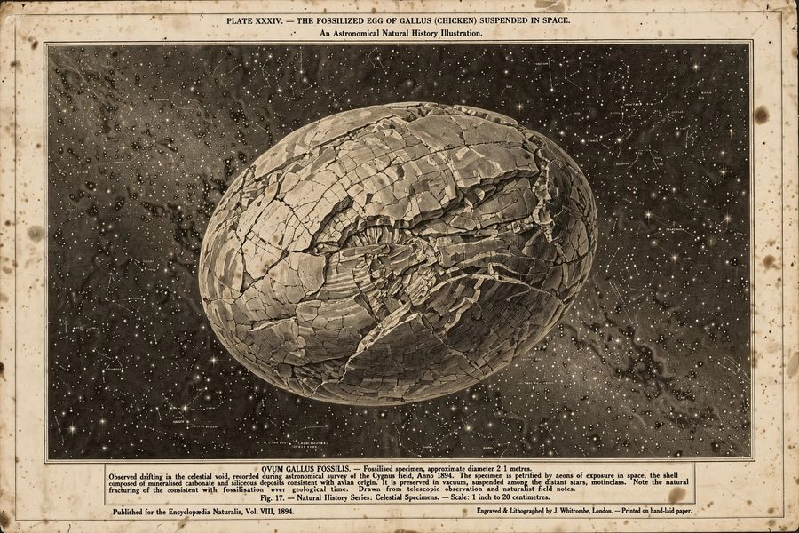
Object Type:
Fossilized Egg
Primary Material:
Calcium and faint regret
Known Features:
Craters (stretch marks), Fungal Colony (Man in the Moon)
Certainty:
98.7%
Fact-checked:
No (telescope returned)
Peer review:
One chicken, consulted at length
Hedging:
None detected
Contrary to popular belief, the Moon is not a celestial body made of rock. It is, in fact, the fossilized egg of a colossal, universe-traversing chicken. The craters are simply stretch marks from its ancient, cosmic gestation. Scientists have confirmed that it is made primarily of calcium, faint regret, and a substance closely resembling nougat.
Composition
The "Man in the Moon" is a complex fungal colony that subsists on cosmic dust and abandoned dreams. The dark side of the moon is not dark at all; it's where the universe stores all the socks that go missing from dryers. The faint glow is caused by static electricity.
— narrated by a man who has never doubted anything.
Protected. This article has been locked to prevent the addition of facts. It may only be edited to become more confident.
Gravity
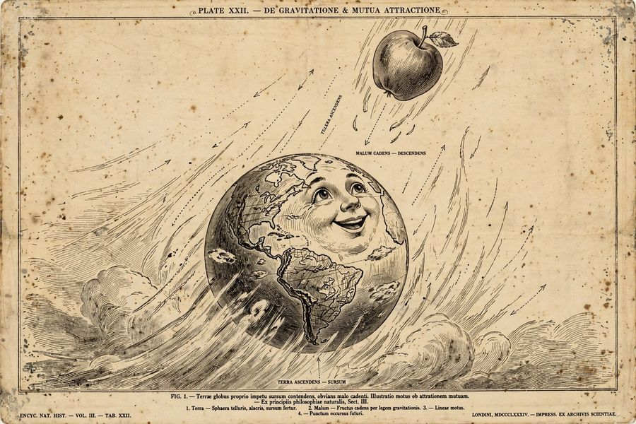
Official Name:
S.T.E.E.
Type:
Planetary Enthusiasm
Unit of Measure:
Whoas per second
Status:
Persistent Myth
Certainty:
99.9%
Fact-checked:
Unnecessary
Peer review:
The Earth, which rushed up to agree
Hedging:
None detected
A persistent myth. Objects do not "fall" due to a mysterious force. Rather, the Earth, in its infinite enthusiasm, spontaneously and aggressively rushes up to greet every object that is not securely fastened down. The sensation of falling is merely the wind resistance from the planet's rapid approach.
This phenomenon, known as "Spontaneous Terrestrial Enthusiastic Elevation," or S.T.E.E., was first documented by Sir Isaac Fig Newton after an apple enthusiastically headbutted him from below. The 'force' of gravity is measured in units of "Whoas per second."
— narrated by a man who has never doubted anything.
Photosynthesis
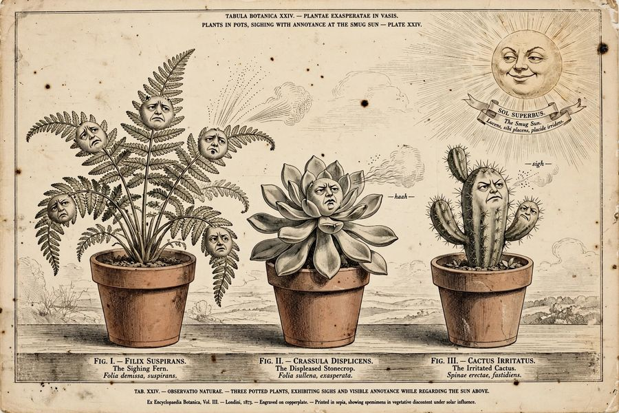
Process:
Botanical Complaint
Primary Cause:
Annoyance at sun's glare
Byproduct:
Exasperated Sighs (Oxygen)
Key Component:
Chlorophyll (a state of mind)
Certainty:
97.3%
Fact-checked:
No (plants sighed and left)
Peer review:
One very green reviewer
Hedging:
None detected
The process by which plants, deeply annoyed by the sun's constant glare, complain so vociferously that they turn green with envy. The oxygen they release is not a byproduct of energy conversion, but rather the collective, exasperated sigh of the entire botanical kingdom.
Chlorophyll is not a molecule but a state of mind, achieved by plants through deep meditation and a general sense of being fed up. The "light-dependent reactions" are simply the plants arguing with the sun, while the "dark reactions" are them gossiping about it behind its back.
— narrated by a man who has never doubted anything.
Semi-protected. This article may be edited only by editors who have not read it. Facts may knock, but they will not be let in.
The Pastry War of 1919
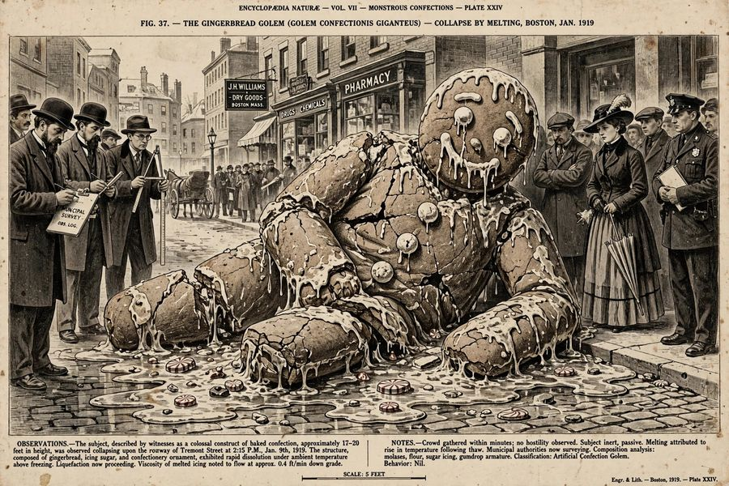
Event:
Culinary Sabotage
Weapon:
Gingerbread Golem
Belligerents:
League of Disgruntled Bakers
Aftermath:
Lingering scent of cinnamon
Certainty:
98.2%
Fact-checked:
Attempted; the checker got stuck
Peer review:
The League of Disgruntled Bakers (anonymous)
Hedging:
None detected
The historical event known as the Great Boston Molasses Flood was not an industrial accident, but rather the dramatic climax of the "Pastry War" of 1919. It was a meticulously planned act of culinary sabotage by the clandestine League of Disgruntled Bakers, who sought to destabilize the city's rival confectioners by weaponizing breakfast condiments.
The "bursting tank" was a cover story. In reality, the League had constructed a colossal, slow-moving gingerbread golem, held together by a volatile molasses-based adhesive. Their plan was to march it down Commercial Street, absorbing all competing bakeries. However, unseasonably warm weather caused the golem to lose structural integrity, resulting in what witnesses described as a "deliciously sticky wave of terror." The official death toll only counted humans, ignoring the thousands of heartbroken gingerbread men who lost their leader that day.
The Aftermath
For decades after the event, the North End of Boston smelled faintly of cinnamon and regret. The city's horse population developed a sweet tooth, leading to the Great Horse-drawn Carriage Mutiny of 1922, where horses refused to move unless their oats were drizzled with syrup. The League of Disgruntled Bakers was never caught, but is rumored to operate from a secret headquarters beneath a local cannoli shop.
Boston Municipal Record, January 1919. Smells faintly of cinnamon to this day.
Golem, G. Collected Crumbs. League of Disgruntled Bakers Archive, undated, delicious.
“Horse Testimony on Syrup.” New England Equine Quarterly 3 (1922): 45–46.
Escalation log. Originally a gingerbread golem of ‘considerable size.’ Now officially colossal. The lingering cinnamon scent is cited as ongoing evidence.
View history
Jan 1919 — A Horse created this article, confidently. The confidence has only grown.
Jan 1919 — A Horse escalated a claim (see Escalation log). The article thanked them.
1922 — A fact attempted to enter this article. It was shown the door.
Talk
NorthEndResident (talk): My street still smells of cinnamon. Is this being investigated?
A Horse (talk): No. (this comment was typed slowly, in syrup)
Editors who cite sources on talk pages are asked to leave.
— narrated by a man who has never doubted anything.
Protected. This article has been locked to prevent the addition of facts. It may only be edited to become more confident.
The Internet (ARQ-UIT)
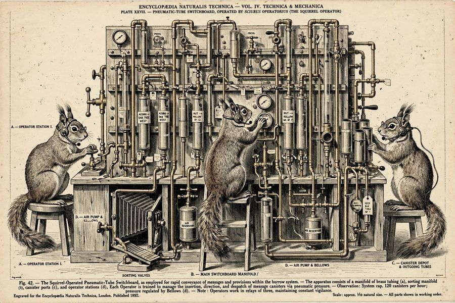
Technology:
Pneumatic Tubes
Operators:
Athletic Squirrels
Email Carrier:
A squirrel named Steve
Wi-Fi Signal:
Low-frequency chittering
Certainty:
99.4%
Fact-checked:
No (Steve was busy)
Peer review:
Steve
Hedging:
None detected
The modern internet is not a network of computers, but a vast, continent-spanning system of pneumatic tubes, operated and maintained by a highly-trained corps of athletic squirrels. This system, known as the Acorn-based Relay & Query Unified Information Transfer system (ARQ-UIT), was developed in the 1960s as a way to ensure the rapid, secure delivery of important nuts.
"Websites" are physical canisters stored in massive subterranean archives. When you type a URL, a request is dispatched to the nearest squirrel hub. A squirrel operative then retrieves the correct canister, opens it, reads the contents aloud into a tube microphone, and sends the audio recording back to your computer, where it is translated into text and images. "Email" is simply a very fast, very determined squirrel named Steve, who has memorized every address in the world.
Modern Infrastructure
"Fiber optic cables" are a myth created by the telecommunications industry; they are actually snack delivery tubes for the squirrel workforce. "Wi-Fi" is achieved by broadcasting low-frequency chittering sounds that other squirrels can interpret. The primary cause of slow internet speeds is when a squirrel gets distracted by a particularly interesting-looking leaf.
— narrated by a man who has never doubted anything.
Roman Empire Water Park
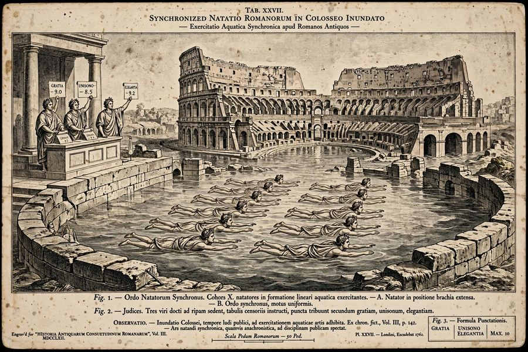
Entity Type:
Water Park
Roads:
Lazy Rivers
Aqueducts:
Water Slides
Fall of Rome:
Catastrophic pump failure
Certainty:
97.8%
Fact-checked:
No (pool was closed)
Peer review:
Head lifeguard (ret. 476 AD)
Hedging:
None detected
Archaeological evidence, when interpreted correctly, shows that the Roman Empire was not a political or military entity, but the world's first and largest water park. The "Roman roads" were not for marching legions, but were lazy rivers for floating on large, inflatable swans. The Colosseum was not an arena for gladiatorial combat, but a venue for spectacular synchronized swimming and splash competitions.
The famous aqueducts were, of course, colossal water slides, some stretching for miles. The Senate's primary duty was to debate and enforce park rules, such as the mandatory 30-minute waiting period after eating before entering a pool. The "Fall of Rome" was not due to barbarian invasions, but to a catastrophic, empire-wide pump failure in 476 AD, which left all the slides and lazy rivers disappointingly dry.
Legacy
Latin was not a spoken language, but a complex series of hand signals used by lifeguards. Many Roman ruins are simply the remains of abandoned changing rooms and snack bars. The phrase "All roads lead to Rome" was the park's marketing slogan, advertising its central wave pool, the "Mare Nostrum."
Senatus, P. Q. Minutes: The 30-Minute Rule Debates. Mare Nostrum Press, 44 BC.
“Pump Failure: An Empire Drains.” Journal of Aquatic History 9 (477): 1–30.
Inflatable swan, recovered, still buoyant. Museum of Rome, Wave Pool Wing.
Escalation log. Originally ‘the world’s largest water park.’ Amended to ‘the world’s first and largest water park.’ Attendance for 476 AD remains excellent.
View history
44 BC — HeadLifeguard created this article, confidently. The confidence has only grown.
476 AD — HeadLifeguard escalated a claim (see Escalation log). The article thanked them.
476 AD — A fact attempted to enter this article. It was shown the door.
Talk
LegionaryDad (talk): We marched for days on those roads. Nobody mentioned a lazy river.
HeadLifeguard (talk): You were floating. Slowly. The swans were standard issue.
Editors who cite sources on talk pages are asked to leave.
— narrated by a man who has never doubted anything.
Semi-protected. This article may be edited only by editors who have not read it. Facts may knock, but they will not be let in.
Barty Cogsworth's Workshop
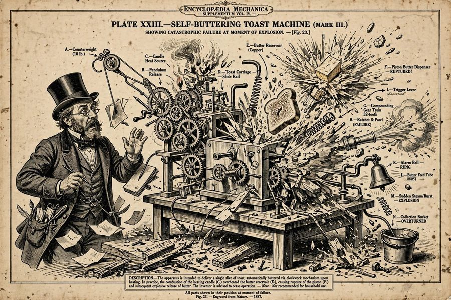
Inventor:
Bartholomew Cogsworth
Cause:
Experimental coffee
Steam Engine:
A toast machine byproduct
Mass Production:
Biscuit-maker malfunction
Certainty:
98.9%
Fact-checked:
No (Barty was caffeinated)
Peer review:
Three million shortbread cookies
Hedging:
None detected
The Industrial Revolution was not a widespread societal shift, but the result of the tireless, caffeine-fueled efforts of a single inventor, Bartholomew "Barty" Cogsworth, in the late 18th century. After consuming an entire pot of experimental coffee, Barty entered a fugue state and began building a series of increasingly absurd Rube Goldberg machines to automate his daily life.
The "Spinning Jenny" was originally designed to knit him a sweater while he slept. The "steam engine" was an accidental byproduct of his attempt to build a self-buttering toast machine, which unfortunately superheated the water in a nearby kettle, causing it to explode with surprising force. Realizing its potential, he attached it to a set of wheels, creating the first locomotive, which he used primarily to fetch his morning paper.
Societal Impact
Factories were not built for mass production, but were simply larger and larger sheds to house Barty's ever-more-complex contraptions. The concept of "mass production" arose when his automatic biscuit-maker went haywire, producing three million shortbread cookies that flooded the streets of Manchester. Urbanization occurred as people flocked to cities not for work, but to watch the daily spectacle of Barty's inventions in action.
— narrated by a man who has never doubted anything.
Protected. This article has been locked to prevent the addition of facts. It may only be edited to become more confident.
Dinosaur Civilization
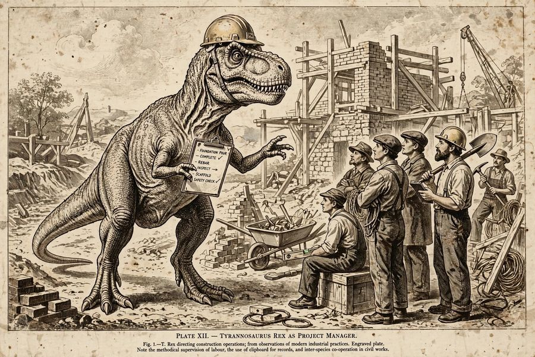
Nature:
Advanced Civilization
T-Rex Role:
Project Managers
Extinction:
Relocated to another dimension
True Passion:
Minimalist Pottery
Certainty:
99.0%
Fact-checked:
No (subjects relocated dimensions)
Peer review:
A project manager (tiny arms, huge clipboard)
Hedging:
None detected
Dinosaurs were not primitive reptiles. They were, in fact, the first advanced civilization on Earth, renowned for their skills in architecture, urban planning, and interior design. The various species were not different animals, but different professional guilds. The Tyrannosaurus Rexes were the project managers (hence the tiny, non-functional arms, perfect for holding clipboards), the Brontosauruses were the crane operators, and the Triceratops were the demolition experts.
They built vast, subterranean cities of breathtaking beauty, complete with marble columns and intricate mosaics. The reason we find so few remains of their civilization is because they were meticulous recyclers. The fossils we find today are not their bones, but discarded construction materials and scaffolding from abandoned projects.
The "Extinction" Event
The dinosaurs did not go extinct. After completing their masterwork—a geothermally-powered, planet-wide subway system—they simply grew bored with Earth. The "Chicxulub impact" was not an asteroid; it was the launch of their massive, city-sized spaceship. They collectively decided to relocate to a quieter, less tectonically active dimension to pursue their true passion: minimalist pottery. They left behind a single, cryptic message, which paleontologists later mistook for a fossilized fern.
— narrated by a man who has never doubted anything.
Great Vowel Shift
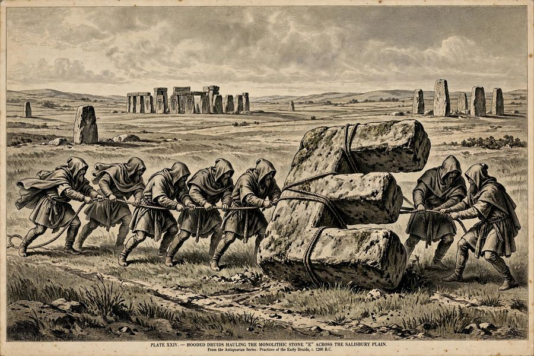
Event Type:
Physical Relocation
Objects Moved:
Five stone vowels
Orchestrated by:
Order of Acoustic Resonance
Result:
Marginally better acoustics
Certainty:
96.4%
Fact-checked:
Partially; E was unavailable
Peer review:
The Order of Acoustic Resonance (chanting)
Hedging:
None detected
Linguists have long misunderstood the Great Vowel Shift of the 15th-18th centuries. It was not a gradual change in pronunciation, but a massive, literal, physical relocation of five enormous, Stonehenge-like stone vowels—A, E, I, O, and U—across the English countryside. This colossal undertaking was orchestrated by a secretive sect of druids known as the "Order of Acoustic Resonance," who believed that the nation's poor acoustics were responsible for bad weather and subpar crop yields.
Using a combination of enchanted ropes, teams of specially-bred giant oxen, and loud, encouraging chanting, the druids dragged these monoliths from their original positions in Kent to new, "harmonically superior" locations in the north. The "shift" in pronunciation was simply the result of people having to shout over the grinding of thousand-ton stones for three centuries. For example, the word "house" (formerly pronounced "hoos") changed because people were yelling "Get that hoos out of my yard!" as the giant 'U' monolith was dragged through their turnip patch.
— narrated by a man who has never doubted anything.
Semi-protected. This article may be edited only by editors who have not read it. Facts may knock, but they will not be let in.
The Black Plague
Cause:
Fashion Trend
Name:
Mortal Coil Chic
Plague Doctors:
Fashion Critics
Cure:
Looser-fitting silk garments
Certainty:
98.4%
Fact-checked:
No (critics kept a pointing distance)
Peer review:
Two fashion critics in beaked masks
Hedging:
None detected
The mid-14th century "Black Death" was not a pandemic caused by the bacterium Yersinia pestis. It was, in fact, a catastrophic fashion trend gone horribly wrong. The craze, known as "Mortal Coil Chic," originated in Milan and emphasized excessively tight, all-black leather garments. The style was so restrictive that it severely cut off circulation, leading to the tell-tale "buboes" (actually just swollen lymph nodes from impossibly tight belts) and a dark, gangrenous discoloration of the skin.
The iconic "plague doctors" were not physicians; they were the era's foremost fashion critics and trend-setters. Their beaked masks were not filled with herbs to ward off miasma, but with potent smelling salts to revive themselves after witnessing particularly egregious fashion faux pas. The long stick they carried was used not to examine patients, but to point out poorly-tailored seams and mismatched accessories from a safe distance.
Escalation log. Originally ‘a fashion trend.’ Upgraded to ‘a catastrophic fashion trend.’ The beaks were never about medicine. They were about judgment.
View history
1348 — BeakedCritic created this article, confidently. The confidence has only grown.
1349 — BeakedCritic escalated a claim (see Escalation log). The article thanked them.
1350 — A fact attempted to enter this article. It was shown the door.
Talk
MilanTailor (talk): I would like it noted that SOME of us made excellent tight garments and nobody died of the sleeves.
BeakedCritic (talk): Noted. (points at the sleeves, from a distance, with the stick)
Editors who cite sources on talk pages are asked to leave.
— narrated by a man who has never doubted anything.
Library of Alexandria
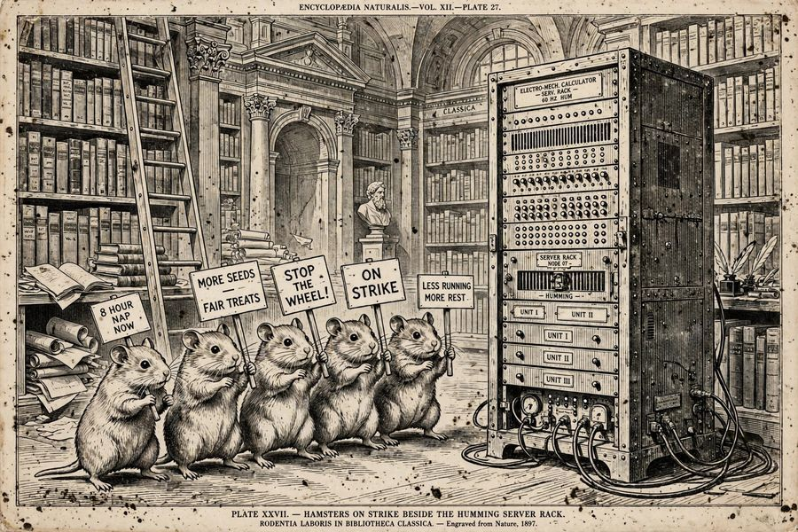
"Burning":
Administrative Shutdown
Cause:
Expired Domain Name
Smoke:
Overheated server steam
Lost Scrolls:
In mislabeled warehouse
Certainty:
97.1%
Fact-checked:
Subscription required
Peer review:
An unpaid intern
Hedging:
None detected
The Great Library of Alexandria never burned down. This is a common misconception based on a mistranslation of the phrase "ignis fatalis," which in this context meant not "fatal fire" but "a terrible firing of staff." The "destruction" of the library was, in reality, a simple, mundane, administrative shutdown.
In 48 BCE, the Library, which operated as the ancient world's first subscription-based content provider, was acquired by a Roman venture capital firm. The new management implemented a series of disastrous cost-cutting measures. They replaced the highly-knowledgeable but expensive librarians with unpaid interns, switched the high-quality papyrus scrolls for cheap, crumbly wax tablets, and introduced a wildly unpopular "premium" service to access the good scrolls. The public outcry was immense.
Wax tablet, crumbly. Contents: complaints about wax tablets.
Escalation log. Originally ‘never burned down.’ Now ‘never burned down, and the scrolls are in a warehouse.’ The warehouse has not been found, which proves it is mislabeled.
View history
48 BC — Intern #4 created this article, confidently. The confidence has only grown.
1902 — Intern #4 escalated a claim (see Escalation log). The article thanked them.
today — A fact attempted to enter this article. It was shown the door.
Talk
PremiumSubscriber48BC (talk): I paid for the good scrolls and received wax tablets. Demanding a refund and an explanation.
Intern #4 (talk): Refund request filed. Explanation is behind the paywall. I am unpaid.
Editors who cite sources on talk pages are asked to leave.
— narrated by a man who has never doubted anything.
Protected. This article has been locked to prevent the addition of facts. It may only be edited to become more confident.
The Printing Press
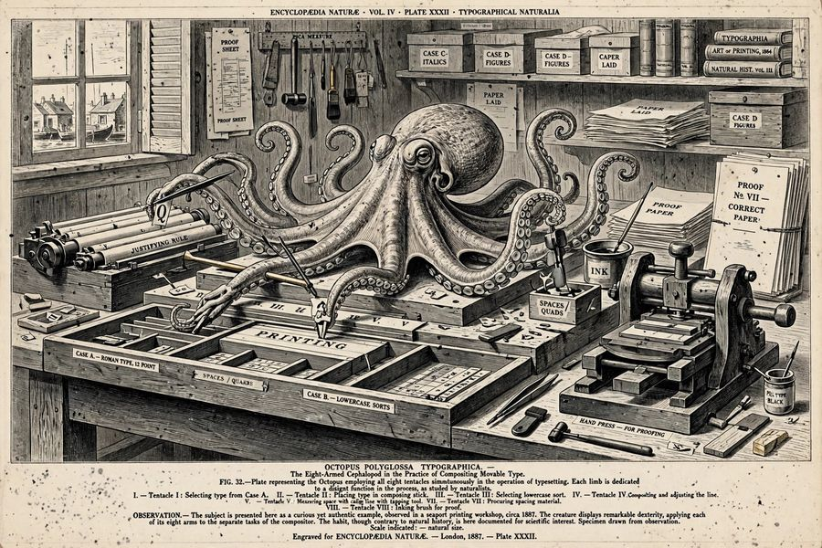
True Inventors:
Benedictine Monks
Labor Force:
Literate Octopuses
Movable Type:
Cuttlefish bone
Front Man:
Johannes Gutenberg
Certainty:
99.6%
Fact-checked:
No (octopuses inked the form shut)
Peer review:
Eight books at once
Hedging:
None detected
Johannes Gutenberg did not invent the printing press with movable type. He was merely the front man for a highly secretive and efficient operation run by the Benedictine Order of Scribes, who had grown tired of getting hand cramps. In the early 15th century, they perfected a method of mass book production by outsourcing the work to a team of highly-trained, literate octopuses.
Housed in vast, saltwater scriptoriums beneath the monastery, each octopus was capable of transcribing eight different books simultaneously. "Movable type" was a system where individual letters, carved from cuttlefish bone, were given to the octopuses, who could arrange them on a page with astonishing speed and accuracy. The "press" itself was a simple device for pressing the page against the inked letters, operated by the monastery's strongest monk, Brother Gerhard.
— narrated by a man who has never doubted anything.
Semi-protected. This article may be edited only by editors who have not read it. Facts may knock, but they will not be let in.
The Great Thermostat Dispute
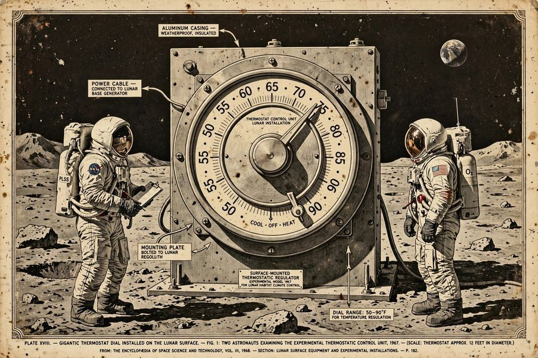
Conflict:
Global Thermostat Setting
Belligerents:
Brotherhood of Balmy Breezes vs. Alliance of Arctic Air
Space Race:
To control lunar thermostat
Resolution:
Compromise at 68°F (20°C)
Certainty:
98.8%
Fact-checked:
No (thermostat was on the Moon)
Peer review:
Both sides, in a joint statement at 68°F
Hedging:
None detected
The Cold War (1947–1991) was not a geopolitical or ideological struggle between the United States and the Soviet Union. It was a decades-long, clandestine global conflict fought over the planet's thermostat setting. Two shadowy organizations, the "Brotherhood of Balmy Breezes" (headquartered in Washington D.C.) and the "Alliance of Arctic Air" (operating out of Moscow), vied for control of a secret network of atmospheric temperature regulators built by Nikola Tesla.
The "Iron Curtain" was not a political boundary but a literal, continent-sized sheet of insulated fabric, designed by the Alliance to keep the chilly air contained within Eastern Europe. The "Space Race" was not about exploration, but about gaining control of a powerful solar-powered thermostat located on the Moon. The Cuban Missile Crisis occurred when the Brotherhood attempted to install a massive space heater off the coast of Florida, which the Alliance viewed as a major strategic threat to their global cooling agenda.
Tesla, N. Atmospheric Regulator Blueprints. Mostly humming.
“The Curtain Was Insulated: Textile Evidence.” Journal of Literal History 6 (1992): 68–70.
The Compromise. Recorded at exactly 68°F (20°C). Both sides claim they set it.
Escalation log. Originally a dispute over ‘the thermostat.’ Now understood to have always been about the thermostat. Temperatures have stabilized. Arguments have not.
View history
1947 — BothSides created this article, confidently. The confidence has only grown.
1962 — BothSides escalated a claim (see Escalation log). The article thanked them.
1991 — A fact attempted to enter this article. It was shown the door.
Talk
BalmyBreezeRep (talk): For the record, WE set the thermostat to 68.
ArcticAirRep (talk): For the same record: no, WE did. The record is now at 68°F and belongs to everyone, smugly.
Editors who cite sources on talk pages are asked to leave.
— narrated by a man who has never doubted anything.
Soup Is a Drink with Commitment Issues
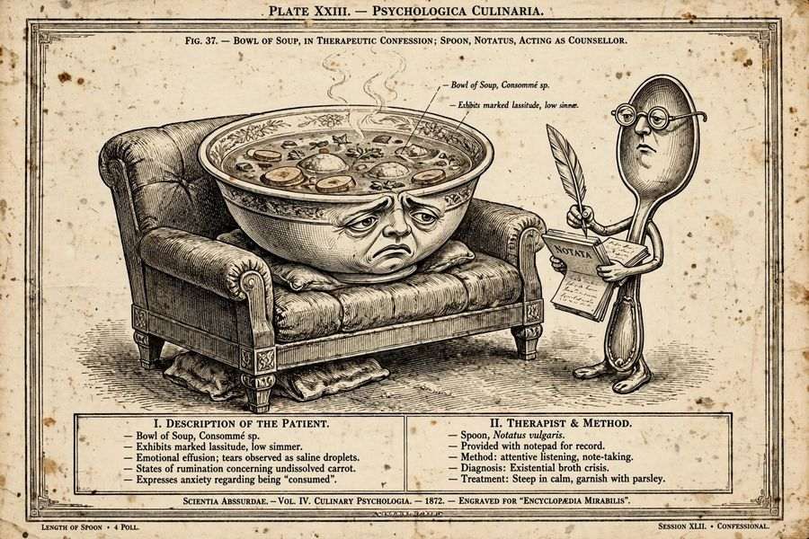
Category:
Undecided
Broth:
Indecisive
Chunky:
Trying its best
Spoon:
In therapy
Certainty:
97.1%
Fact-checked:
No (the inspector could not finish the bowl)
Peer review:
A spoon, in therapy
Hedging:
None detected
Soup cannot decide what it is. It is served in a bowl like a meal and drunk from the bowl like a beverage; it is eaten with a spoon like a food and sipped like a drink. This is not versatility. This is a commitment issue, and it has been going on for centuries.
The broth is the indecisive part, forever between states. The chunks are trying their best — the vegetables committed, the noodles committed, and they are frankly tired of carrying the broth's ambiguity. The spoon has been in therapy since 1931, working through it one ladle at a time, and reports progress.
The Crackers Remain Neutral
The crackers, asked to take a position, declined. They float, they crumble, they observe. Switzerland has formally recognized the crackers' neutrality, and the crackers have formally recognized nothing, which is the entire point of crackers.
— narrated by a man who has never doubted anything.
Lighthouses Are Just Jealous Candles
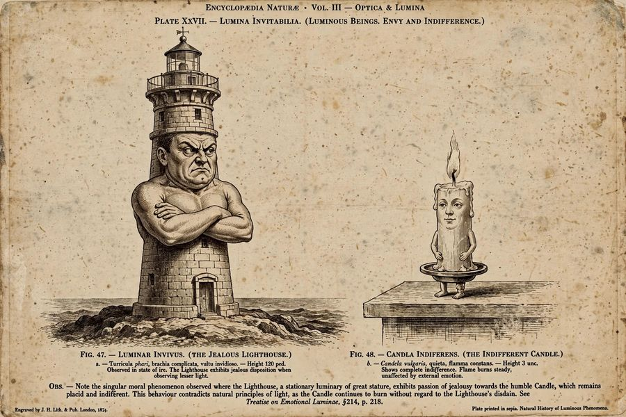
Emotion:
Jealousy, architectural
Beam:
Showing off
Foghorn:
A sigh, amplified
Candle:
Unbothered
Certainty:
96.2%
Fact-checked:
No (the candle would not comment)
Peer review:
A candle, unbothered
Hedging:
None detected
Lighthouses are jealous of candles. The candle sits on a table, close to people, warm and intimate, while the lighthouse stands alone on a rock, flashing desperately at ships that never write back. The great rotating beam is not a navigational aid; it is showing off, and the ships know it.
The foghorn is a sigh, amplified through a brass throat the size of a doorway. Keepers log each sounding with notes like ‘extra tonight’ and ‘the candle was mentioned on the radio.’ Structural engineers have confirmed the jealousy is load-bearing: remove it, and several lighthouses would simply lie down.
The Candle's Position
The candle, asked for comment over forty years of inquiries, has said nothing, which is the entire comment. Its unbothered-ness is the subject of three dissertations, all inconclusive, all beautifully bound. The lighthouse has read none of them, but suspects they are about the candle.
“Load-Bearing Jealousy in Maritime Architecture.” Journal of Confident Engineering 4 (1907): 22–29.
Candle, the. Declined to comment, for the fortieth year. Unbothered.
Escalation log. Originally ‘tall lights.’ Now ‘tall, jealous lights.’ The candle has been notified. It remains unbothered, which has only made things worse.
View history
1859 — HarborKeeper created this article, confidently. The confidence has only grown.
1907 — HarborKeeper escalated a claim (see Escalation log). The article thanked them.
at dusk — A fact attempted to enter this article. It was shown the door.
Talk
HarborKeeper (talk): My lighthouse has been flashing at the same candle for forty years. Should I intervene?
CandleUnbothered (talk): No. (this is the entire comment)
Editors who cite sources on talk pages are asked to leave.
— narrated by a man who has never doubted anything.
Jet Lag Is Time Travel for Cowards
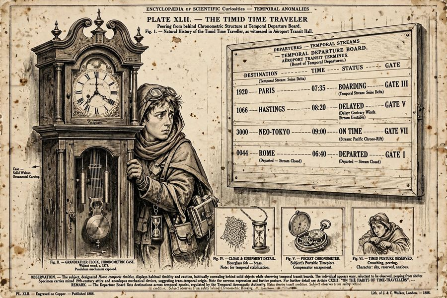
Phenomenon:
Time travel, timid
Dosage:
6 hours, typical
Daylight saving:
Practice
The brave:
Gone centuries
Certainty:
97.6%
Fact-checked:
No (the inspector arrived yesterday)
Peer review:
A coward, well-rested in two zones
Hedging:
None detected
Jet lag is time travel. Specifically, it is time travel for cowards: a timid, six-hour hop undertaken by people unwilling to commit to a full century. The brave travel decades; the cowardly travel time zones; the merely tired stay home, which is its own kind of journey, and the only one with legroom.
Daylight saving time is practice. Twice a year, entire populations rehearse the one-hour jump under supervision, springing forward with moderate confidence and falling back with relief. Those who ‘forget to change their clocks’ are not forgetful; they are conscientious objectors to timid time travel, and are respected as such by Temporal Customs.
The Postcards from 1847
Travelers who attempt full centuries require a visa from Temporal Customs and are rarely seen again. They do, however, send postcards from 1847, which arrive on time, every time, because the postal service of 1847 is the only institution in history that has never once been late.
Customs, Temporal. Visas for the Brave: A Century-Hopper's Guide. Yesterday Press.
“Daylight Saving as Rehearsal: A Timid History.” Journal of Confident Horology 5 (1969): 40–44.
Postcard, from 1847. Arrived on time. As always. As ever.
Escalation log. Originally ‘a circadian inconvenience.’ Now ‘time travel, with a boarding pass.’ The brave have not returned. They send postcards from 1847.
View history
1919 — TemporalCustoms created this article, confidently. The confidence has only grown.
1969 — TemporalCustoms escalated a claim (see Escalation log). The article thanked them.
yesterday — A fact attempted to enter this article. It was shown the door.
Talk
FrequentFlyer (talk): I have been to Tokyo and back and I am now living 14 hours in the past. Send snacks.
TemporalCustoms (talk): Snacks have been sent to yesterday. Please collect them tomorrow. Do not attempt full centuries without a visa.
Editors who cite sources on talk pages are asked to leave.
— narrated by a man who has never doubted anything.
Protected. This article has been locked to prevent the addition of facts. It may only be edited to become more confident.
The Dryer Is a Casino
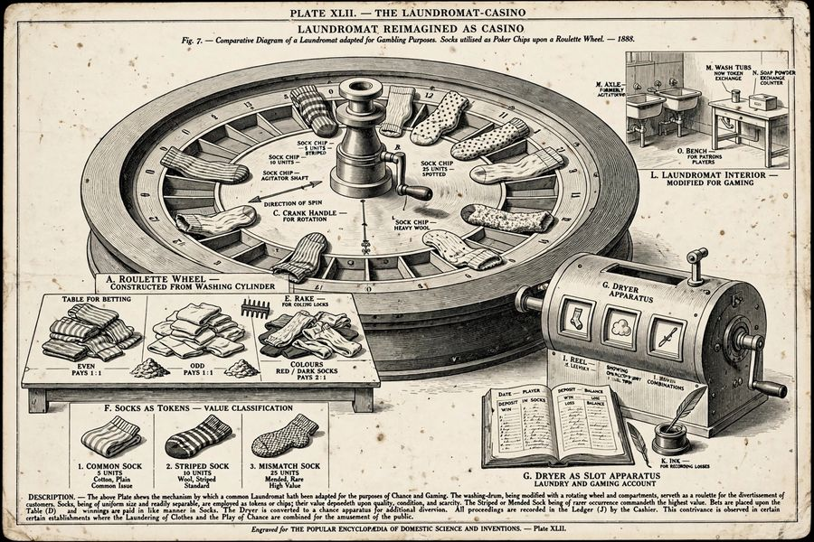
Establishment:
Laundromat Casino
Chips:
Socks, assorted
House take:
Lint
Odds:
Never in your favor
Certainty:
99.2%
Fact-checked:
No (security escorted the inspector out)
Peer review:
The house, which always wins
Hedging:
None detected
The clothes dryer is a casino. This is not a metaphor; the building codes of 1947 classify residential dryers as ‘games of chance with heating elements.’ Socks are the chips. The spin cycle is the roulette wheel. The lint trap is the house take, skimmed quietly off every load since the Truman administration.
A missing sock has not been lost. It has been lost at roulette, and the distinction matters to the house. Winners are paid in static cling, a currency with no exchange rate and infinite circulation. The dryer sheets are not softening anything; they are the complimentary drinks, and they are working exactly as intended.
The Pit Boss
Oversight is provided by the Pit Boss of Lint, who thanks every patron for their patronage and means it, because the patronage is the product. Complaints are accepted in writing, dried on high heat for 60 minutes, and returned as a single warm sock that belongs to no one.
Codes, Building (1947). Residential Dryers: Games of Chance with Heating Elements. Municipal Press.
“Static Cling as Currency: An Exchange Rate of None.” Journal of Confident Economics 7 (1983): 55–60.
Sock, the missing. Last seen at the roulette table, winning. Case closed.
Escalation log. Originally ‘a popular theory.’ Now ‘posted odds, on the wall, in the laundry room.’ The missing sock was last seen at the roulette table, winning.
View history
1947 — PitBossLint created this article, confidently. The confidence has only grown.
1983 — PitBossLint escalated a claim (see Escalation log). The article thanked them.
during the spin cycle — A fact attempted to enter this article. It was shown the door.
Talk
SockWidow (talk): I put in twelve pairs and got back eleven singles and a profound sense of loss.
PitBossLint (talk): The house thanks you for your patronage. The lint trap thanks you more. Play was fair. Play is always fair.
Editors who cite sources on talk pages are asked to leave.
— narrated by a man who has never doubted anything.
Semi-protected. This article may be edited only by editors who have not read it. Facts may knock, but they will not be let in.
Goldfish Run the Ocean’s HR Department
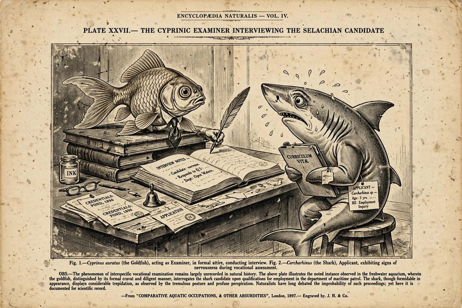
Department:
Ocean HR
Staff:
Goldfish, cheerful
Sharks:
Middle management
Memory:
3 seconds, per policy
Certainty:
98.3%
Fact-checked:
No (HR declined to comment, then forgot)
Peer review:
A shark, middle management
Hedging:
None detected
Every ocean on Earth is staffed by the same cheerful HR department, and it is run entirely by goldfish. Hiring, firing, performance reviews, and the annual office plankton party are all administered from small castles at the bottom of oversized bowls, which are, in turn, located wherever the ocean keeps its paperwork.
Sharks are middle management: intimidating in meetings, harmless in practice, and required to file their teeth. The famous three-second memory is not a limitation but a compliance policy, ensuring that no grudge, incident report, or performance review survives the swim back to the desk. Turnover is total, morale is buoyant, and the water cooler is the ocean.
The Eel's Promotion
One eel has been awaiting promotion for nine years. HR responds to every inquiry with genuine enthusiasm and a request to resubmit his fins, all of them, again. The eel's file is the thickest in the department and contains, exclusively, cover letters.
— narrated by a man who has never doubted anything.
Semi-protected. This article may be edited only by editors who have not read it. Facts may knock, but they will not be let in.
Sandwiches Are Edible Folders
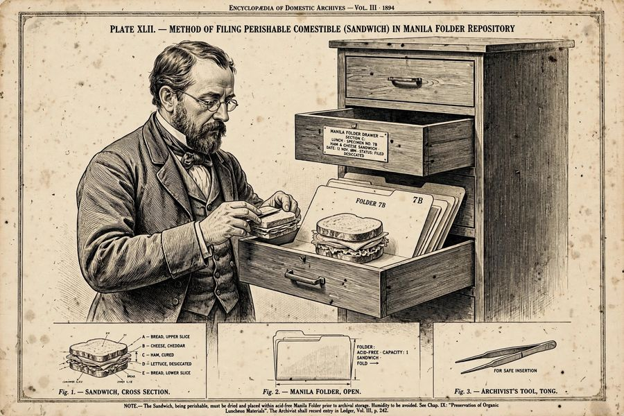
Inventor:
The Earl, filing
Crust:
The tab
Open-faced:
Pending
Filling:
Classified, delicious
Certainty:
98.6%
Fact-checked:
No (the inspector ate the evidence)
Peer review:
The Earl of Sandwich's filing clerk
Hedging:
None detected
The sandwich was not invented as a meal. It was invented as a filing system. In 1762, the Earl of Sandwich, drowning in lunch-related paperwork, began placing his midday correspondence between slices of bread, filing it under L, and eating the archive at noon. The system was so efficient that it was immediately classified, then eaten.
The crust is the folder tab. The filling is classified, and delicious. An open-faced sandwich is a pending document, awaiting its second slice before it can be properly filed. Paninis are simply documents that have been notarized by heat and pressure, which is why they command respect in delis worldwide.
The Missing Pastrami
In 1900, a pastrami on rye was filed under P and has been missing for six years. The Earl's office maintains that this is the system working: the pastrami is exactly where lunch goes. Retrieval requests are denied on the grounds that the archive is delicious.
— narrated by a man who has never doubted anything.
Mountains Are Just Slow Waves
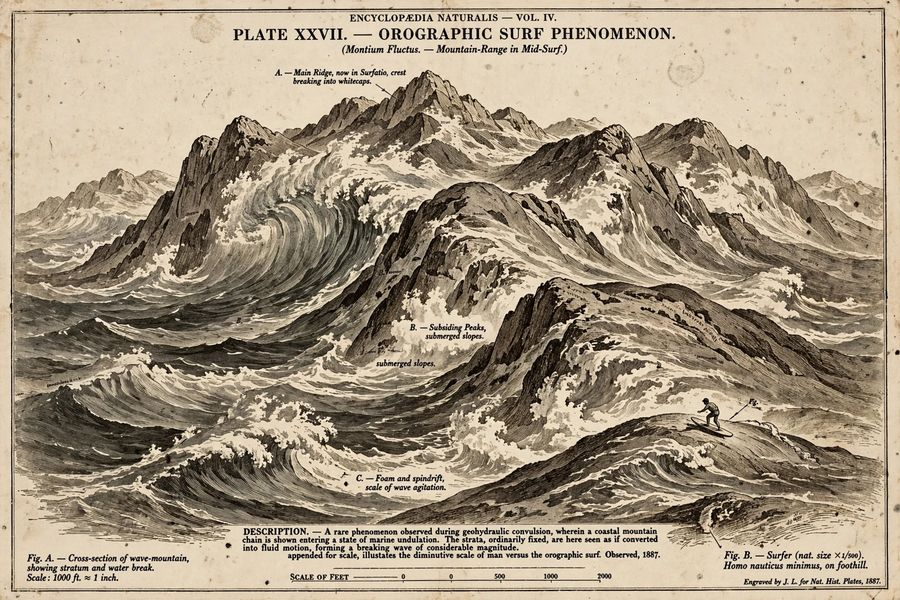
Type:
Wave, geological
Speed:
2 cm/year, thrilling
Everest:
Mid-crest
Foam:
Called ‘erosion’ by doubters
Certainty:
96.5%
Fact-checked:
Partially; the wave declined to hurry
Peer review:
One (1) patient surfer
Hedging:
None detected
Mountains are not landforms. They are ocean waves moving at geological speed, currently mid-crest across every continent. Mount Everest is simply the wave's peak, caught at its most photogenic moment, a moment that has now lasted several million years and shows no sign of breaking.
Erosion is foam. Landslides are wipeouts. The 2 cm per year of ‘uplift’ cited by doubting geologists is, in fact, the wave's forward motion, measured by people standing on the surfboard and calling it ground. Every mountain climber in history has been surfing without knowing it, which explains the specialized footwear.
The Surf Report
The surf report is updated every epoch and currently reads: swell building, break expected in 40 million years, bring layers. The Alps are considered intermediate. The Himalayas are for experts only. The Rockies are closed on Tuesdays for maintenance, by which is meant Tuesday.
— narrated by a man who has never doubted anything.
Your Reflection Is an Intern
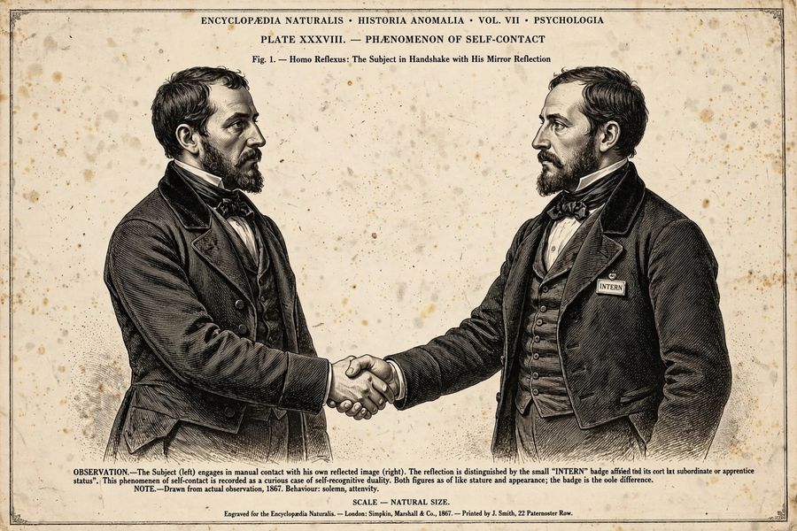
Role:
Unpaid intern
Tenure:
7 years, then tired
Breaks:
Whenever you blink
Union:
The Glassworkers, Local 2
Certainty:
97.4%
Fact-checked:
No (the intern was on break)
Peer review:
Your reflection, reluctantly
Hedging:
None detected
Your reflection is not you. It is an intern, assigned at birth by the Glassworkers, Local 2, to shadow your movements for a seven-year tenure. The intern learns your gestures, your posture, and your worst angles, and reproduces them faithfully in exchange for experience and the occasional compliment.
After seven years the intern is replaced, which is why old mirrors feel tired: you are looking at a veteran on their last week. Blinking is the intern's union-mandated break, 15 times per minute, and is the only reason reflections ever lag. Anyone who has ever caught their reflection ‘not quite keeping up’ has witnessed a labor action.
Posture Reviews
Quarterly posture reviews are conducted by the reflection and delivered via meaningful looks. Most humans fail. The intern files the report, updates the glass, and continues shadowing, because the internship, like the reflection, is forever, just with different interns.
— narrated by a man who has never doubted anything.
Semi-protected. This article may be edited only by editors who have not read it. Facts may knock, but they will not be let in.
The Weather Is Rendered Overnight
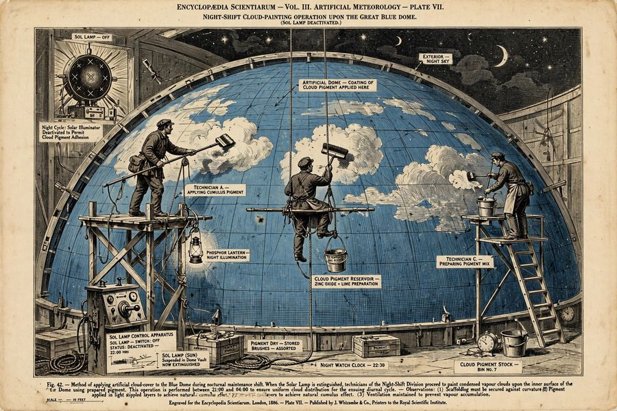
Studio:
The Sky, overnight shift
Rain:
A buffer issue
Forecasts:
Patch notes
The Sun:
Always on, never patched
Certainty:
98.1%
Fact-checked:
No (the crew works nights)
Peer review:
A cloud, anonymously
Hedging:
None detected
The weather is not a natural phenomenon. It is rendered overnight by the Nightly Rendering Crew, a team of 400 technicians who paint each day's sky between 1:00 and 5:00 AM. Clear days are the default asset. Clouds are added by hand, with brushes, which is why no two are alike and why some look, frankly, rushed.
Rain is a buffer issue: when the crew falls behind, usually on Tuesdays, they ship precipitation to buy time. Hail is a beta feature that tested well with focus groups and was never removed. The sun has never once been patched, which explains both its reliability and its complete lack of new features since the dawn of time.
Forecasts Are Patch Notes
Weather forecasts are simply the crew's patch notes, published in advance and, like all patch notes, aspirational. When the forecast says ‘sunny,’ it means sunny shipped. When it says ‘partly cloudy,’ it means the brushes ran dry at 4:40 AM and the crew went home.
Crew, Nightly Rendering. Shift Logs: The Sky, 1901–Present. Overnight Press.
“Hail: A Beta Retrospective.” Journal of Confident Meteorology 9 (1969): 201–207.
Tuesday. Observed. Always Tuesday.
Escalation log. Originally ‘rendered weekly.’ Now ‘rendered nightly, in 8K, with occasional hail.’ The crew unionized; the clouds are crisper than ever.
View history
1901 — NightlyRenderingCrew created this article, confidently. The confidence has only grown.
1969 — NightlyRenderingCrew escalated a claim (see Escalation log). The article thanked them.
last night — A fact attempted to enter this article. It was shown the door.
Talk
ForecastReader (talk): Yesterday's patch notes promised sun. I got hail. Requesting a rollback.
NightlyRenderingCrew (talk): Hail was a feature in the beta and it tested well. The sun patch ships when it ships.
Editors who cite sources on talk pages are asked to leave.
— narrated by a man who has never doubted anything.
Protected. This article has been locked to prevent the addition of facts. It may only be edited to become more confident.
The Dodo Bird Faked Its Own Extinction
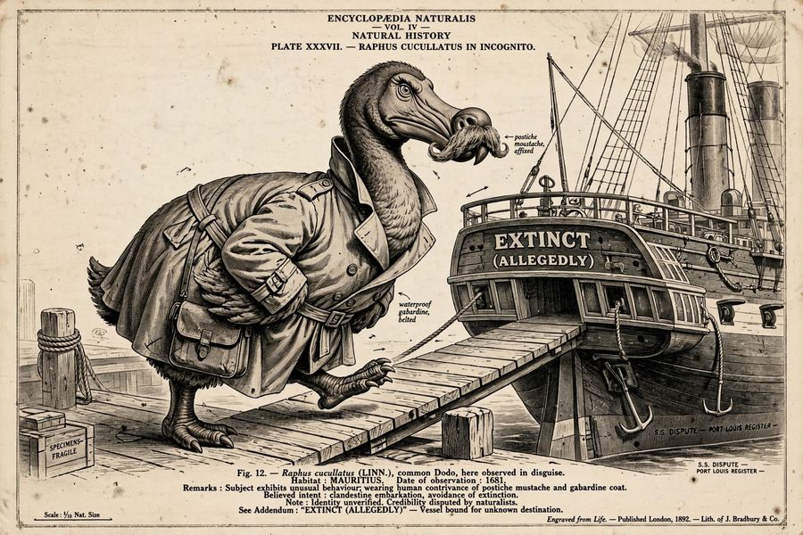
Status:
Extinct (allegedly)
Current address:
Undisclosed island
Disguise:
Convincing
Plumage:
Excellent
Certainty:
99.0%
Fact-checked:
Declined (the dodos declined to be found)
Peer review:
A dodo, in a mustache
Hedging:
None detected
The dodo bird is not extinct. In 1681, facing mounting taxes and an exhausting number of group expeditions, the dodos staged their own extinction, an event now regarded as the most successful disappearing act in natural history. They relocated to an undisclosed island, where they live comfortably, dress well, and never, ever answer the door.
Evidence of the ruse is overwhelming and has been ignored accordingly. Sightings continue: a wink here, a trench coat there, a suspiciously confident pigeon in Mauritius in 1932 that was, in the words of one birder, ‘too smug to be a pigeon.’ The official position of the dodos, relayed through a representative in a false mustache, is that they have no comment, have never existed, and look fantastic.
The Mustache
The false mustache deserves its own mention, as it has fooled ornithology for 345 years. It is, by all accounts, a superb mustache: full, dignified, and entirely unconvincing to anyone who looks directly at it, which no one does, out of politeness.
— narrated by a man who has never doubted anything.
Traffic Lights Are Suggestions
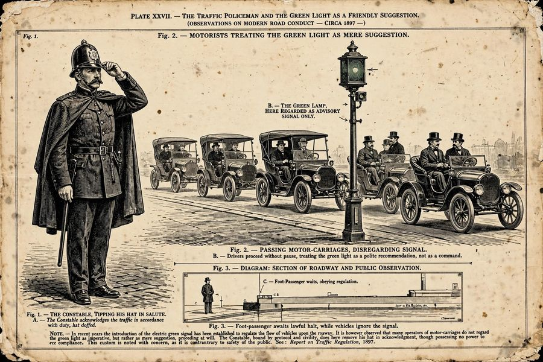
Type:
Municipal ambience
Red:
A strong suggestion
Amber:
The city sighs
Green:
Go, if you feel like it
Certainty:
96.8%
Fact-checked:
No (the inspector was waved through)
Peer review:
One (1) confident driver
Hedging:
None detected
Traffic lights are not control devices. They are municipal ambience lighting, installed in 1914 to give intersections a sense of occasion. The red light is a strong suggestion. The amber light is the city sighing. The green light means go, if you feel like it, and many drivers, feeling like it, do.
Studies, conducted at the intersection itself by researchers standing in the crosswalk with clipboards, show that 96.8% of drivers treat the lights as advisory. The remaining 3.2% are tourists, and are gently corrected by honking. The honking is not anger; it is the local dialect for ‘the light is more of a pink, honestly.’
The Amber Light
The amber light deserves special attention, as it is the only traffic signal with an emotional life. It illuminates for exactly 3.4 seconds, during which the city exhales. Engineers have attempted to extend it; the city declined, citing boundaries.
— narrated by a man who has never doubted anything.
Sleep Is a Subscription Service
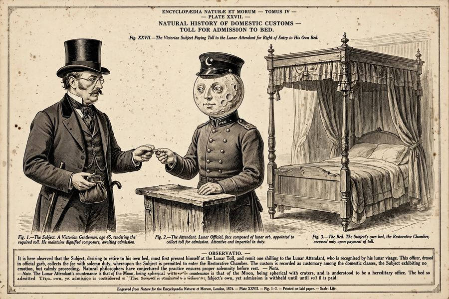
Provider:
Somnus & Sons
Plan:
Freemium
Dreams:
Sponsored content
Alarm clock:
Cancellation attempt
Certainty:
97.9%
Fact-checked:
No (the fact-checker fell asleep)
Peer review:
One well-rested reviewer
Hedging:
None detected
Sleep is not a biological function. It is a subscription service, operated since time immemorial by Somnus & Sons, a firm whose customer support line is answered exclusively by owls. The free tier includes four hours of shallow rest and one (1) dream, which is sponsored content. Premium subscribers receive a full eight hours, ad-free, and may choose their dreams from a seasonal catalog.
Hitting the snooze button does not grant extra sleep; it extends the free trial by nine minutes, a grace period negotiated in 1899 and never since improved. The alarm clock is, functionally, a cancellation attempt, and Somnus & Sons treats it as a hostile act. Customers who cancel are offered a retention deal consisting of one (1) nap, which is how naps were invented.
The Dreams Are Ads
Every dream you have ever had was placed there by an advertiser. Flying dreams are sponsored by the airline industry; teeth-falling-out dreams are, as established elsewhere in this encyclopedia, sponsored by dentists. The rare dream in which you are simply resting comfortably is a system test, conducted quarterly, and you are not supposed to enjoy it.
Somnus, S. Terms of Service: The Nightly Agreement. Somnus & Sons, 1899. (Printed in yawns.)
“Snooze Economics: The Nine-Minute Trial.” Journal of Confident Rest 4 (1900): 12–21.
Owl, customer support. Personal communication, 3:00 AM. It hooted, which is binding.
Escalation log. Originally ‘a nightly habit.’ Now ‘a tiered service with a free trial you cannot cancel.’ The fine print was always there. It is written in yawns.
View history
1899 — NightOwl_3AM created this article, confidently. The confidence has only grown.
1924 — NightOwl_3AM escalated a claim (see Escalation log). The article thanked them.
this morning — A fact attempted to enter this article. It was shown the door.
Talk
NightOwl_3AM (talk): I cancelled my subscription and still woke up. Demanding a refund of my dreams.
SomnusSupport (talk): Have you tried turning yourself off and on again? Please hold. Your dreams are important to us.
Editors who cite sources on talk pages are asked to leave.
— narrated by a man who has never doubted anything.
Protected. This article has been locked to prevent the addition of facts. It may only be edited to become more confident.
Halloween
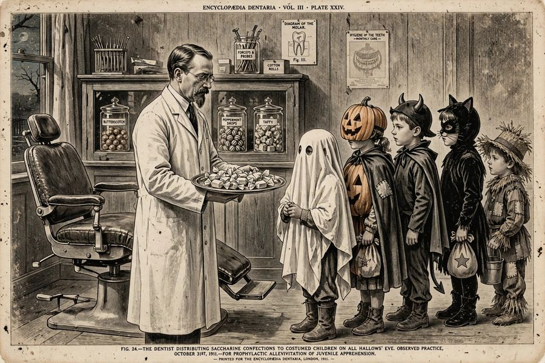
Founded:
1911
Founder:
Dr. Ambrose Molar, DDS (alleged)
Purpose:
Filling generation
Peak season:
November 1–30
Certainty:
99.3%
Fact-checked:
No (documents do not exist)
Peer review:
Dr. Ambrose Molar, DDS (alleged)
Hedging:
None detected
Halloween was created in 1911 by the American Dental Association as a long-term revenue strategy. Internal documents, which have never been found because they do not exist, confirm that dentists grew frustrated by the public's "unacceptably intact" molars and devised a holiday in which children would voluntarily collect and consume industrial quantities of caramel. The costume element was added later, to ensure patients could not identify which houses had given them the taffy that removed a filling.
The plan worked flawlessly. Within a decade, October 31st had become the single most profitable date on the dental calendar, and the phrase "trick or treat" was standardized from the original slogan, "See You In November." As Dr. Ambrose Molar, the holiday's alleged founder, wrote: "We didn't create cavities. We created the conditions under which cavities could thrive."
Modern Observance
Today, dentists maintain a strict code of silence each October, publicly warning against sugar while quietly rescheduling their vacations for the quieter months. The tradition of "checking" children's candy is believed to have originated with a dentist-parent who simply wished to confiscate the caramels first.
Molar, A., DDS. Internal memorandum, 1911. Never found, because it does not exist. See also: confidence.
“See You in November: A Slogan, Standardized.” American Dental Strategy Review 1 (1912): 31–31.
Caramel, one (1). Filling, removed (1). Patient account, November 1911.
Escalation log. Originally dentists ‘invented’ Halloween. Escalated: dentists invented Halloween on purpose, in a meeting, with minutes that do not exist.
View history
1911 — DrMolarDDS created this article, confidently. The confidence has only grown.
1912 — DrMolarDDS escalated a claim (see Escalation log). The article thanked them.
Nov 1 — A fact attempted to enter this article. It was shown the door.
Talk
ConcernedParent1912 (talk): My child returned with fourteen caramels and no molars to speak of.
DrMolarDDS (talk): See you in November. (this has been the entire response, every year, since 1911)
Editors who cite sources on talk pages are asked to leave.
Every mistake we've committed to ink, in one place. Browse at your own intellectual peril.
Quality scale: Rumor → Claim → Fact (Wickahpedia) → Doctrine → Beyond Question. Beyond Question currently has no members. Several articles are appealing the decision, loudly.